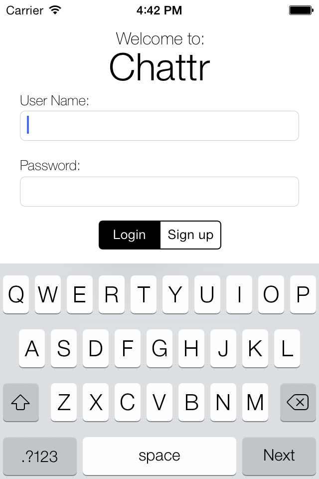
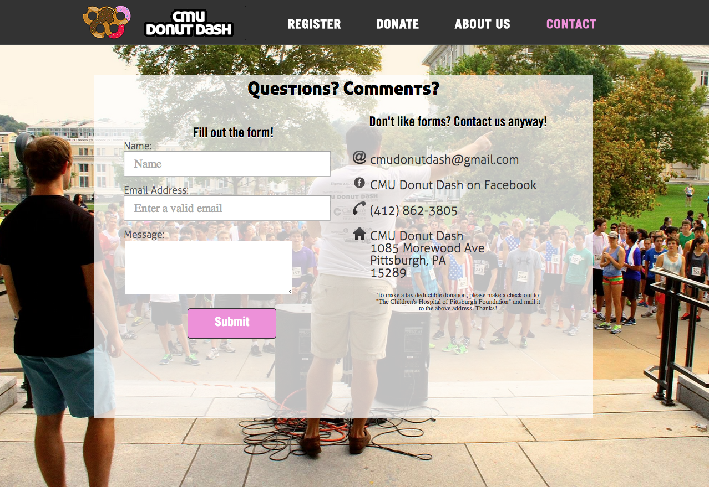
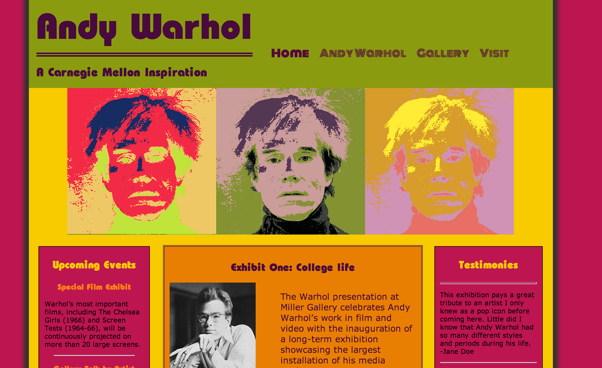
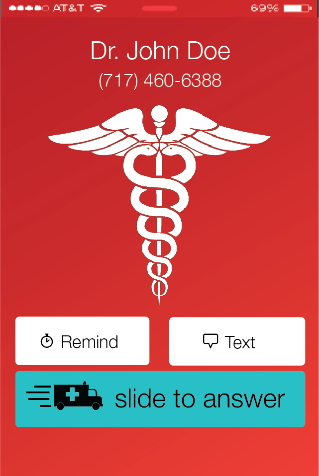

I designed and developed a Bitcoin trading application for a class called Fundamentals of Programming and Computer Science. Written in Python and using the MtGox and Google News APIs, the application could buy and sell Bitcoins, show one's real-time personal investment portfolio, send SMS text alerts indicating price changes, and display up-to-date news about Bitcoins. If you'd like to see a demonstration of my program, check out the video here.
Chattr is a chat messenger application that my partner and I designed and developed for an Intro iOS development course. Using Objective-C along with Parse as a backend, we developed a fully-functional messenger app for the iPhone.
As Operations Head of CMU Donut Dash, I was tasked with making sure that all aspects of the race went successfully. In addition to planning out all logistical details of the race, I was asked to help create the website, so I designed and developed a portion of it seen here. This website allowed over 300 runners to register and helped raise over $21,000 for The Children's Hospital.
I designed and developed a website for a fictional gallery featuring Andy Warhol's artwork for a class called Intro to Information Systems. The goal of the project was to increase proficiency in HTML, CSS, jQuery, and fundamentals of design. The website design was supposed to encompass Warhol's unique, bold, and sometimes controversial artwork, while still preserving all functionality.
Nimbus I/O was a proposed startup idea that my 4 colleagues and I shaped into potentially lucrative business. Nimbus I/O is basically a very profitable file transfer service that would enable much larger file transfers than are currently available to the common user. After researching and planning for two months, we formulated a business plan and pitch that won us one of the top awards in our entrepreneurship class. Click here to view our final presentation.
I was challenged with designing an iPhone splashscreen illustrating an incoming call from medical personnel. The design was supposed to emphasize the type of caller even when looking at it from a distance. My final submission (seen below) won Best Design out of all other medical personnel designs.
